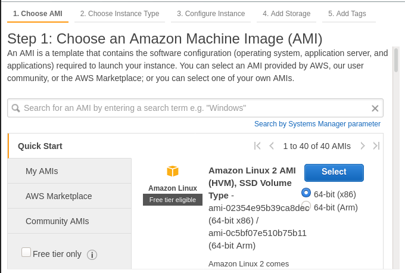
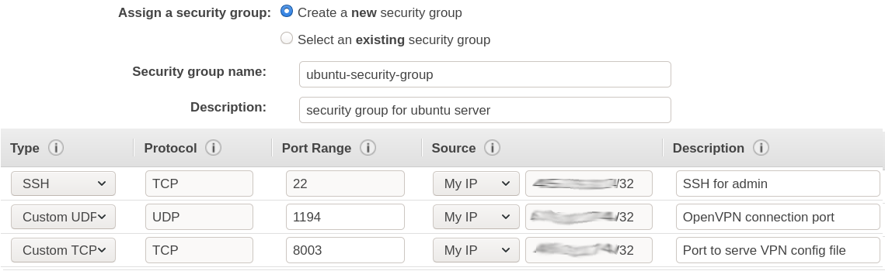
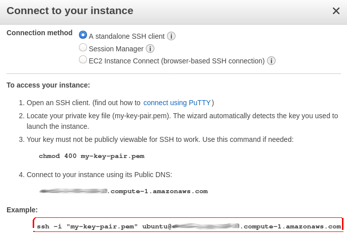
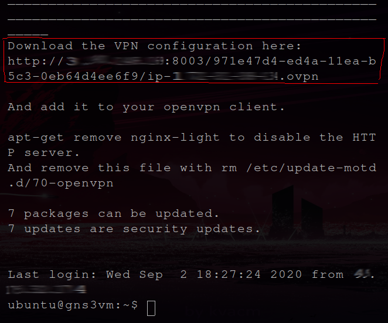
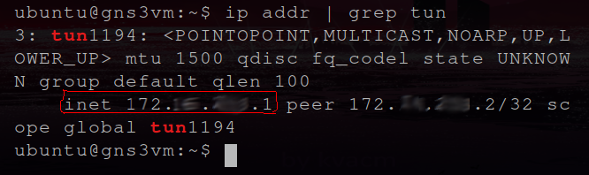
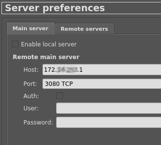
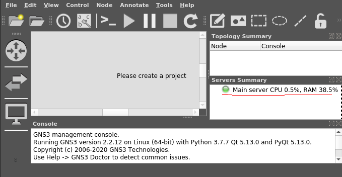
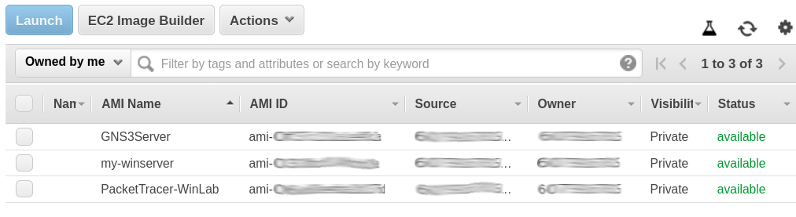

Posted on September 2, 2020 - 3 minute read
How to setup GNS3 on a remote server
This is the companion article to How to setup Cisco Packet Tracer on a remote server
- Launch an EC2 instance
- Install OpenVPN and GNS3 on the instance
- Config your OpenVPN client and open the VPN tunnel
- Config your GNS3 client
- Enjoy!
- But before you go... save your work!
Step Zero : Requirements
- An AWS account
- A local GNS3 installation
- A local OpenVPN installation
- A SSH client of your choice
DISCLAIMER: I've made this tutorial using linux.
Step 1 : Launch an EC2 instance
- Launch a Windows instance
- Navigate to EC2 in the AWS Console.
- Click Launch Instance.
- Select a free-tier elegible Ubuntu image.
- Click Next - leave the Instance Type panel as is.
- Click Next - leave the Instance Details panel as is.
- Click Next - leave the Storage panel as is.
- Click Add Tag. Set key to Name and value to the name you choose to your instance. (Optional step)
- Click Next.
- 
- Create a Security Group
- Assign a security group: Create a new security group
- Set the security group name and description as you choose.
- Type: SSH
- Protocol: TCP
- Port Range: 22
- Source: My IP
- Description: (optional)
- Type: Custom UDP
- Protocol: UDP
- Port Range: 1194
- Source: My IP
- Description: (optional)
- Type: Custom TCP
- Protocol: TCP
- Port Range: 8003
- Source: My IP
- Description: (optional)
- Click Review and Launch.
- Click Launch.
- 
- SSH connection for admin
- OpenVPN connection port
- Port to serve VPN config file
- Create a Key Pair
- Select: Create a new key pair
- Set the key pair name as you choose.
- Click Download Key Pair
- Click Launch Instances

- Connect to instance
- Back to EC2 Instances panel in the AWS Console.
- Select the instance.
- Click Connect.
- Connection method: A standalone SSH client
- Change the keypair file permissions to Only Owner Read/Write as follows:
chmod 400 my-key-pair.pem
Or, if you are using Windows:- [File] Properties - Security - Advanced
- Set Owner to the key's user
- Remove all users, groups, and services, except for the key's user, under Permission Entries
- Set key's user to Full Control
- At the SSH client of your choice, input the details provided.
- User name ubuntu
- Target: Public DNS
- Example:
ssh -i my-key-pair.pem ubuntu@server-public-dns
- 
Step 2 : Install OpenVPN and GNS3 on the instance
- Download/Install GNS3
- Inside the server:
sudo su
- Install the GNS3 as instructed by the
Installation Guide
cd /tmp curl https://raw.githubusercontent.com/GNS3/gns3-server/master/scripts/remote-install.sh > gns3-remote-install.sh bash gns3-remote-install.sh --with-openvpn --with-iou --with-i386-repository
- Restart the server for the installation to take effect:
reboot now
Step 3 : Config your OpenVPN client and open the VPN tunnel
- Config OpenVPN client
- SSH back to the server, copy and download the config file provided by the OpenVPN server to your local machine.
- 
- Run OpenVPN client
- At your local machine, run OpenVPN client using the file dowloaded:
sudo openvpn config-file.ovpn
Step 5 : Config your GNS3 client
open gns3 client file - preferences - server server ip forgot to take note? use lsof -li port TCP/3080 no auth- Find the tunnel IP address
- At the server:
ip addr | grep tun
- ip addr list all the IP addresses.
- grep tun filters the result of 'ip addr' and shows only the records with 'tun' (as in tunnel) in it.
- 
- Config remote main server
- Open your local GNS3 client.
- Click Edit; Preferences; Server
- Host: the tunnel IP address
- Port: 3080
- 
Step 6 : Enjoy!
Now you have the Cisco Packet Tracer installed and ready to go!
- 
Step 7 : But before you go... save your work!(and some money)
Don't leave your instance running without any purpose. Save your instance (all configured and tweaked) to use it whenever you're up to lab again.
- Create an AMI
- Back to EC2 Instances panel in the AWS Console.
- Select the instance.
- Click Actions; Image; Create Image
- Your AMIs will be available on the EC2 Images panel in the AWS Console.
- 
- Don't forget to terminate your instance!
- Back to EC2 Instances panel in the AWS Console.
- Select the instance.
- Click Actions; Instance State; Terminate
- Click Yes, Terminate